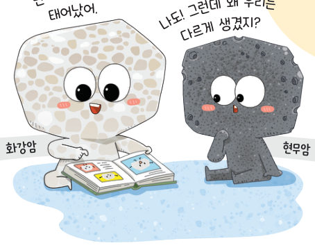
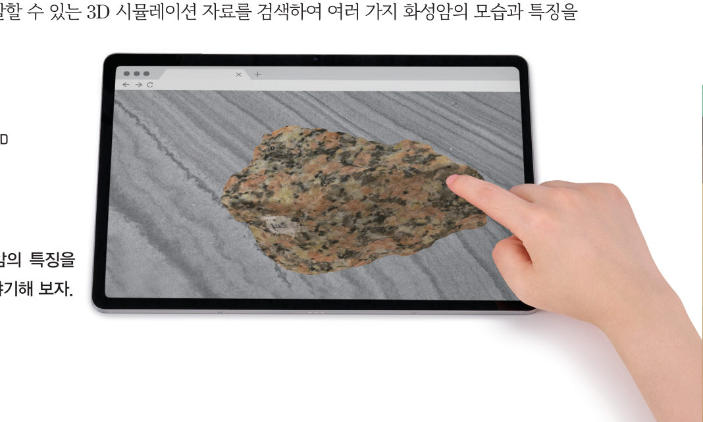
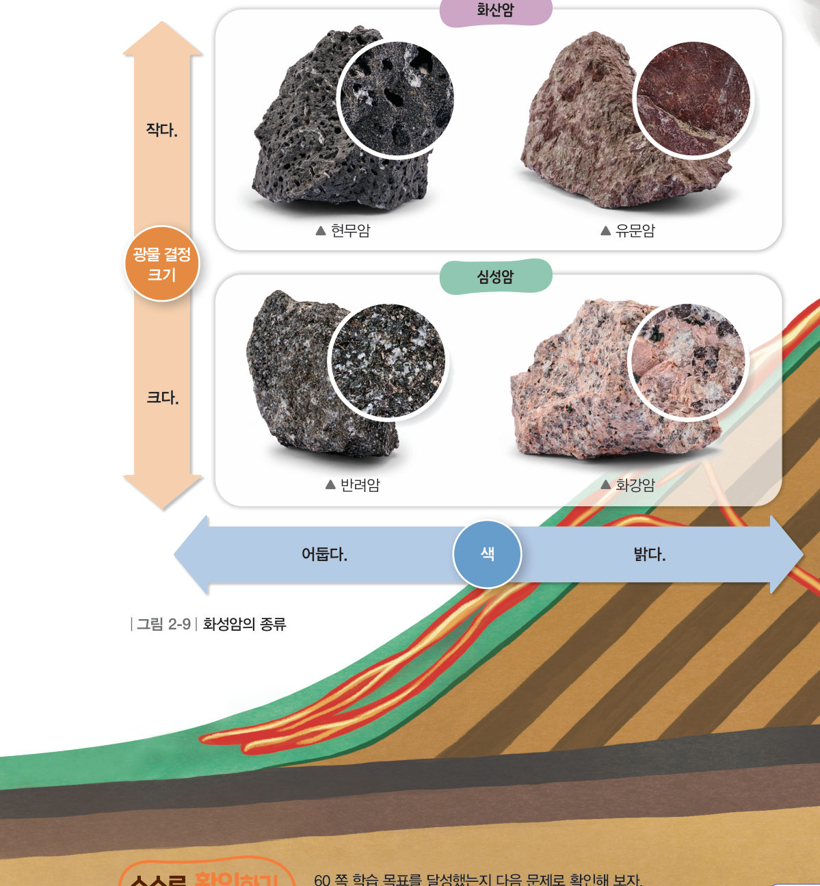

살아있는 교과서 · Ⅱ. 지권의 변화 · 2. 암석의 종류와 순환 · 01 59~61쪽
마그마가 식어서 만들어진
마그마가 식어서 만들어진
화성암
“난 마그마에서 태어났어.” “나도! 그런데 왜 우리는 다르게 생겼지?” 화강암과 현무암의 생김새가 다른 까닭은 무엇일까? 3D 표본을 돌려 보고, 마그마를 빨리·천천히 식혀 광물 결정을 직접 키워 보자.
🎯 이 단원을 배우면 — 화성암의 생성 과정과 종류를 설명할 수 있다.
두 번째 블록국가지질공원에서 볼 수 있는 암석은 어떤 특징이 있을까? 59쪽
“전북 서해안권 국가지질공원에서는 층층이 쌓여 있는 암석을 볼 수 있어.” “책을 차곡차곡 쌓아 올린 듯한 모습으로 보이는 것이 정말 신기해.” 이 단원의 힌트 조각을 모으면 여러 가지 암석의 특징을 이해하여 두 번째 블록 질문에 답할 수 있다.
이 단원과 관련해 이미 알고 있는 것에 표시해 보자.
교과서화성암은 어떻게 만들어질까? 60쪽
지하 깊은 곳에 있는 마그마가 식어서 만들어진 암석을 화성암이라고 한다. 화성암 중 마그마가 지표 부근에서 빨리 식어서 만들어진 암석을 화산암이라고 하며, 화산암에는 현무암, 유문암 등이 있다. 또 마그마가 지하 깊은 곳에서 천천히 식어서 만들어진 암석은 심성암이라고 하며, 심성암에는 반려암, 화강암 등이 있다.
해 보기 · 디지털 탐구 도구3D 시뮬레이션 자료를 이용하여 화성암 관찰하기 60쪽

표본을 고르고 드래그해 돌려 보자. 광물 결정의 크기와 암석의 색을 비교해 보세요.
💬관찰한 화성암의 특징(결정의 크기, 색)을 친구들과 이야기해 보자.
가상 실험마그마를 식혀 광물 결정 키우기
마그마가 식는 곳과 마그마의 성분을 정하고 [식히기]를 눌러 보자. 결정이 자라는 모습과 다 굳은 뒤의 결정 크기를 비교해 보세요.
걸린 시간(가상)-
결정 수-
만들어진 암석-
1마그마가 빨리 식으면 광물 결정의 크기가 , 천천히 식으면 결정의 크기가 . 밝은색 광물이 많은 마그마가 지하 깊은 곳에서 천천히 식으면 이 된다.
교과서화성암의 종류 61쪽
마그마가 식을 때는 광물 결정이 만들어지는데 화산암은 마그마가 빨리 식어서 광물 결정의 크기가 작고, 심성암은 마그마가 천천히 식어서 광물 결정의 크기가 크다. 화성암은 구성 광물의 종류에 따라 색이 달라진다. 현무암이나 반려암과 같이 어두운색 암석에는 어두운색 광물이 많고, 유문암이나 화강암과 같이 밝은색 암석에는 밝은색 광물이 많다. 화성암은 광물 결정의 크기와 암석의 색에 따라 그림 2-9와 같이 구분할 수 있다.

1그림 2-9의 빈칸을 채워 보자.
| 어두운색 | 밝은색 | |
|---|---|---|
| 화산암 (결정 작음) | ||
| 심성암 (결정 큼) |
스스로 확인하기60쪽 학습 목표를 달성했는지 확인해 보자 61쪽
1개념 확인 마그마가 식어서 만들어진 암석을 ( )(이)라고 한다.
2사고력 제주도에 현무암이 많은 까닭을 화성암의 생성 과정과 관련지어 설명해 보자.
5분 테스트마그마가 식어서 만들어진 화성암
1화성암은 가 식어서 만들어진 암석이다.
| ② 마그마가 지표 부근에서 빨리 식어서 만들어진 암석은 심성암이다. | |
| ③ 마그마가 지하 깊은 곳에서 천천히 식어서 만들어진 암석은 심성암이다. | |
| ④ 현무암은 화산암에 해당한다. | |
| ⑤ 화강암은 심성암에 해당한다. |
⑥ 마그마가 빨리 식어 만들어진 을 이루는 광물 결정의 크기는 .
2(가) 현무암 (나) 반려암 (다) 유문암 (라) 화강암
| ⑦ 밝은색 광물이 많은 암석 | |
| ⑧ 광물 결정의 크기가 큰 암석 | |
| ⑨ 화산암 | |
| ⑩ 심성암 |
스스로 정리하기화성암
1화성암
⑴ 화성암: 마그마가 식어서 만들어진 암석
⑵ : 지표 부근에서 빨리 식음 → 결정이 작음 (현무암, 유문암)
⑶ : 지하 깊은 곳에서 천천히 식음 → 결정이 큼 (반려암, 화강암)
⑷ 색: 어두운색 광물이 많으면 어두운색(현무암, 반려암), 밝은색 광물이 많으면 밝은색(유문암, 화강암)
⑵ : 지표 부근에서 빨리 식음 → 결정이 작음 (현무암, 유문암)
⑶ : 지하 깊은 곳에서 천천히 식음 → 결정이 큼 (반려암, 화강암)
⑷ 색: 어두운색 광물이 많으면 어두운색(현무암, 반려암), 밝은색 광물이 많으면 밝은색(유문암, 화강암)
| 평가 기준 | 스스로 평가 |
|---|---|
| 지식·이해 화성암의 생성 과정과 종류를 설명할 수 있는가? | |
| 가치·태도 3D 시뮬레이션 자료를 이용하여 화성암을 관찰하고, 과학에 흥미를 느꼈는가? |
제출학생 정보 · 제출하기
모든 활동을 마친 뒤 제출하면 전체가 한 번에 채점되고 피드백이 나타나요. 답안은 선생님 스프레드시트(중2 탭)에 기록돼요.